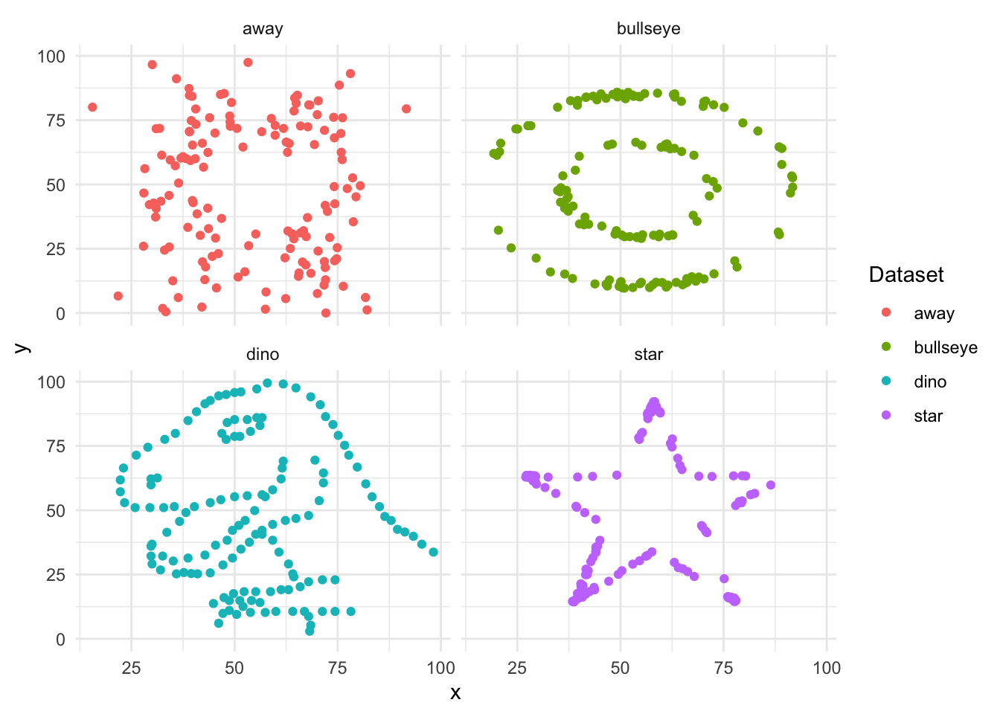
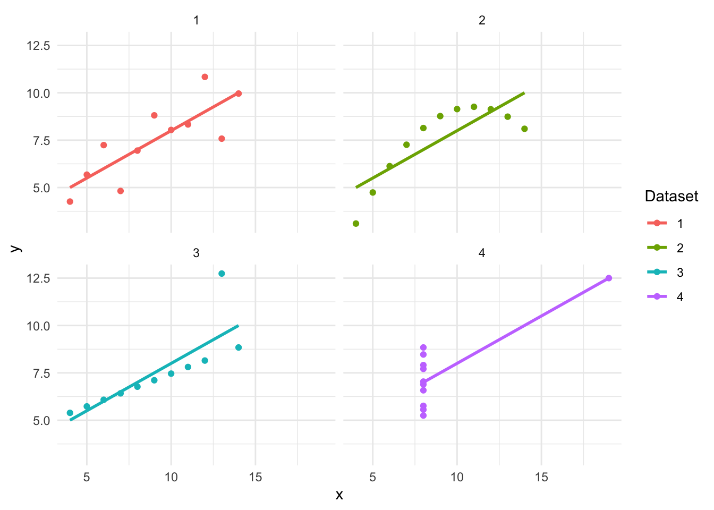
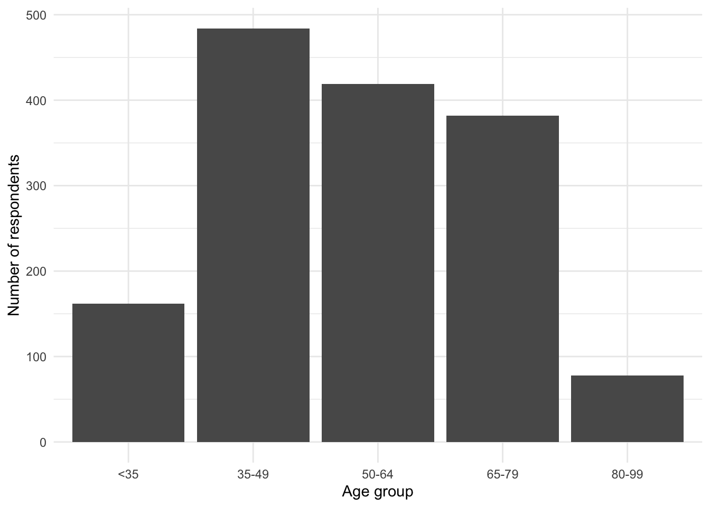

Graphs are an essential component of data storytelling. They help us recognize patterns, understand distributions, and communicate findings effectively. This notebook introduces best practices for graphing in R using ggplot2 and demonstrates how summary statistics can sometimes be misleading if we do not visualize our data.
Learning Objectives
By the end of this session, students will: - Understand the importance of graphing raw data before relying on summary statistics. - Learn to use ggplot2 for scatterplots, bar charts, line plots, and faceted plots. - Explore different themes, color palettes, and aesthetic modifications. - Apply these techniques to real-world datasets.
Setup: Loading Required Packages
# Load necessary librarieslibrary(tidyverse) # Core tidyverse package for data wrangling & visualization
── Attaching core tidyverse packages ──────────────────────── tidyverse 2.0.0 ──
✔ dplyr 1.1.4 ✔ readr 2.1.5
✔ forcats 1.0.0 ✔ stringr 1.5.1
✔ ggplot2 3.5.1 ✔ tibble 3.2.1
✔ lubridate 1.9.3 ✔ tidyr 1.3.1
✔ purrr 1.0.2
── Conflicts ────────────────────────────────────────── tidyverse_conflicts() ──
✖ dplyr::filter() masks stats::filter()
✖ dplyr::lag() masks stats::lag()
ℹ Use the conflicted package (<http://conflicted.r-lib.org/>) to force all conflicts to become errors
library(datasauRus) # Fun dataset illustrating the importance of visualizationlibrary(ggplot2) # Graphing packagelibrary(janitor) # Cleaning column names
Attaching package: 'janitor'
The following objects are masked from 'package:stats':
chisq.test, fisher.test
library(WDI) # Accessing World Bank economic indicatorslibrary(carData) # British Election Panel Study datasetlibrary(patchwork) # Combining multiple plotslibrary(tidygeocoder) # Geocoding supportlibrary(tinytable) # Nice formatted tables# Set theme for all plotstheme_set(theme_minimal())
Why Graphing Your Data is Important
Example 1: The Datasaurus Dozen
The datasaurus_dozen dataset illustrates why we should always plot our data instead of relying solely on summary statistics.
Each subset of this dataset has the same mean and standard deviation for x and y, yet their visual patterns are completely different.
Computing Summary Statistics
This code below is a pipeline that processes the datasaurus_dozen dataset to compute and display summary statistics (mean and standard deviation) for four selected datasets: “dino”, “star”, “away”, and “bullseye”. The pipeline begins by using filter(dataset %in% c(“dino”, “star”, “away”, “bullseye”)), which subsets the data to only include these four specific datasets. The summarise() function then calculates the mean and standard deviation for both the x and y variables, applying the across() function to compute these statistics for each dataset separately. The .by = dataset argument ensures that the summary statistics are grouped by dataset, so each subset receives its own computed values.
After computing the summary statistics, the code formats the output into a visually appealing table. The tt() function (from the tinytable package) is used to create a neatly formatted table, and style_tt(j = 2:5, align = “r”) aligns the numeric columns (x mean, x sd, y mean, y sd) to the right for better readability. The format_tt(digits = 1, num_fmt = “decimal”) function ensures that numerical values are displayed with one decimal place. Finally, setNames(c(“Dataset”, “x mean”, “x sd”, “y mean”, “y sd”)) renames the columns to more descriptive labels for clarity. This pipeline efficiently extracts, summarizes, and presents key statistical insights from the datasaurus_dozen dataset while emphasizing the importance of looking beyond summary statistics to understand data distributions visually.
👉 Key Takeaway: These datasets appear identical in summary statistics, but let’s plot them.
Recall that the mean, or average, is a measure of central tendency that represents the typical value in a dataset. It is calculated by adding up all the values and dividing by the total number of values. The mean gives us a sense of where most of the data points are centered. The standard deviation measures how spread out the values are from the mean. If the standard deviation is small, most values are close to the mean; if it’s large, the values are more spread out.
In short:
low standard deviation = data points are close together
high standard deviation = data points are more spread out
These concepts help us understand how typical or how varied our data is.
Visualizing the Datasaurus Dozen
# Plot the datasetsdatasaurus_dozen |>filter(dataset %in%c("dino", "star", "away", "bullseye")) |>ggplot(aes(x = x, y = y, colour = dataset)) +geom_point() +facet_wrap(vars(dataset), nrow =2, ncol =2) +labs(color ="Dataset")

👉 Observation: Despite having identical summary statistics, each dataset has a distinct shape!
Example 2: Anscombe’s Quartet
Frank Anscombe developed Anscombe’s Quartet to highlight the same issue.
This code reshapes the anscombe dataset into a tidy format using the pivot_longer() function. The tidy format (or tidy data) is a structured way of organizing data where each row represents an observation, each column represents a variable, and each cell contains a single value. This format, introduced by Hadley Wickham, makes data easier to manipulate, visualize, and analyze using tools like ggplot2 and dplyr. For example, in a non-tidy format, you might have separate columns for x1, y1, x2, y2, etc. (like in Anscombe’s Quartet). In a tidy format, you would restructure the data so that there are only three columns: set (indicating the dataset), x, and y, with each row representing one observation. Tidy data is particularly useful because it works seamlessly with the tidyverse, allowing for easier grouping, filtering, summarizing, and plotting.
The everything() argument ensures that all columns in the dataset are transformed. The names_to = c(“.value”, “set”) argument tells pivot_longer() to split the original column names into two parts: one representing the variable (x or y) and the other representing the dataset number (1, 2, 3, or 4). The names_pattern = “(.)(.)” uses regular expressions to separate column names based on their structure (e.g., x1, y1 → x, y for dataset 1). As a result, the tidy_anscombe dataset now has three columns: set (identifying the dataset number), x (the independent variable), and y (the dependent variable). This transformation makes the data more structured and easier to work with, particularly for grouped analysis and visualization in ggplot2.
Computing Summary Statistics
tidy_anscombe |>summarise(across(c(x, y), list(mean = mean, sd = sd)),.by = set ) |>tt() |>style_tt(j =2:5, align ="r") |>format_tt(digits =1, num_fmt ="decimal") |>setNames(c("Dataset", "x mean", "x sd", "y mean", "y sd"))
Dataset
x mean
x sd
y mean
y sd
1
9
3.3
7.5
2
2
9
3.3
7.5
2
3
9
3.3
7.5
2
4
9
3.3
7.5
2
Visualizing Anscombe’s Quartet
tidy_anscombe |>ggplot(aes(x = x, y = y, colour = set)) +geom_point() +geom_smooth(method = lm, se =FALSE) +facet_wrap(vars(set), nrow =2, ncol =2) +labs(colour ="Dataset")
`geom_smooth()` using formula = 'y ~ x'

👉 Insight: Again, summary statistics don’t tell the full story!
Bar Charts: Comparing Categorical Variables
We now explore bar charts using the British Election Panel Study.
beps <- beps |>mutate(age_group =case_when( age <35~"<35", age <50~"35-49", age <65~"50-64", age <80~"65-79", age <100~"80-99" ),age_group =factor(age_group, levels =c("<35", "35-49", "50-64", "65-79", "80-99")) )
Plotting the Distribution of Age Groups
beps |>ggplot(aes(x = age_group)) +geom_bar() +labs(x ="Age group", y ="Number of respondents")

Scatterplots: Exploring Relationships Between Variables
Using World Bank Data, we analyze GDP growth and inflation.